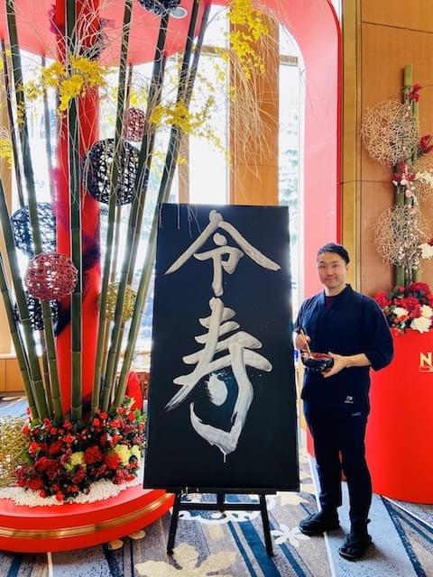
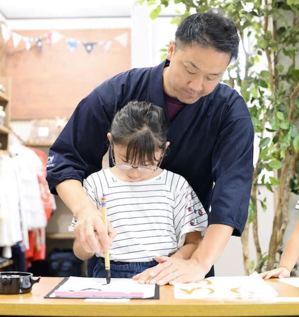
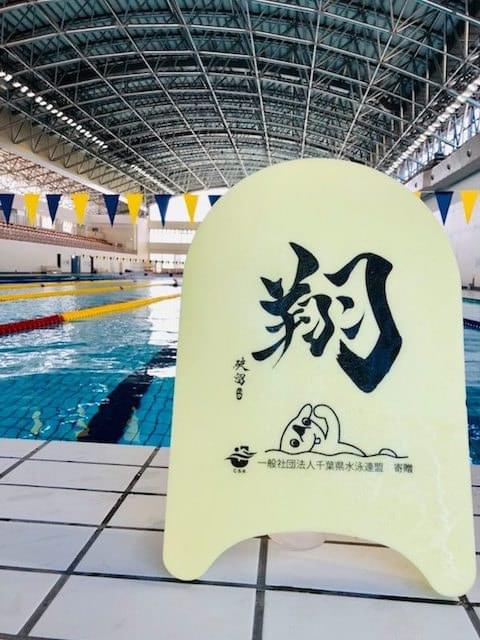
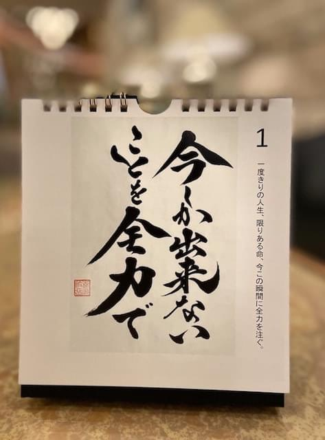
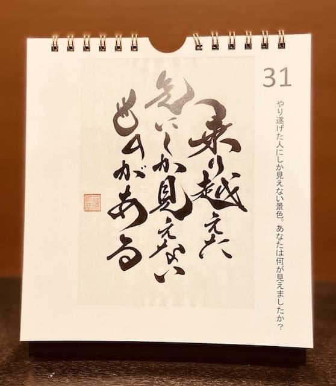

About
出生
1980年 千葉県佐原市（現 香取市）生まれ
2016年より 埼玉県所沢市 在住
経歴
幼少期よりスイミングクラブと書道塾へ通う。
水泳ではジュニアオリンピック３位入賞。書道では文部大臣賞受賞。「水泳」と「書道」を続ける中で『今しか出来ないこと』を選択。
大学では競泳一本にしぼり、日本選手権出場。アテネ五輪選考会で引退。『乗り越えた先にしか見えないものがある』を実感。
引退直前のアメリカ合宿で外国人に手紙（筆ぺんでその人のイメージを書き、解説の英文を添える）を贈り、感激して頂いたことから「日本の伝統文化、書道・漢字の素晴らしさ」を体感。色々な人に出逢い、自分の詩・書を通じてその素晴らしさを伝えたい。2006年より、現在の活動『書き心』（日本各地での実演・パフォーマンス、
商業施設での実演販売、飲食店やスポーツチームの題字制作など）に至る。
主な活動歴
| 「哲学の道」で露店販売開始（京都府） | |
| ヘアサロン「AXE obje」人生初の個展（奈良県） | |
| ラジオ鎌倉FM「ムッシュタケウチショー」出演（神奈川県） | |
| 銀座ミレージャギャラリー「和展」グループ展（東京都） | |
| 水泳誌「月刊スイム」題字起用『我道を泳ぐ』（東京都） | |
| 箱根駅伝壮行会『一人一役』亜細亜大学 実演（東京都） | |
| 『兵庫からｵﾘﾝﾋﾟｯｸ選手を!』９Ｍ横断幕（兵庫県） | |
| 百貨店「三越 恵比寿店」展示・実演販売（東京都） | |
| 陸上「いわて銀河100kmﾁｬﾚﾝｼﾞﾏﾗｿﾝ」実演販売（岩手県） | |
| 国民体育大会『神奈川』『Kanagawa』水泳題字制作（神奈川県） | |
| 水泳「ロンドン五輪選考会」書道ﾊﾟﾌｫｰﾏﾝｽ・実演会（東京都） | |
| 教育「Benesseこどもちゃれんじ」筆文字起用（4/5/7月号） | |
| Impress Japan「年賀状ソフト」筆文字掲載（日本） | |
| ホビー「東急ハンズ池袋店」展示・実演販売（東京都） | |
| 成田国際空港「初日の出フライト」書道ﾊﾟﾌｫｰﾏﾝｽ（千葉県） | |
| 2海外「MOVE展」書道ﾊﾟﾌｫｰﾏﾝｽ・ﾚｯｽﾝ・TV出演（ドイツ） | |
| 教育「社会科資料集 小学６年生」p.119掲載／新学社（日本） | |
| 航空「ルフトハンザドイツ航空」書道ﾊﾟﾌｫｰﾏﾝｽ（東京都） | |
| 教育「『夢先生』JFAこころのプロジェクト」登壇（神奈川県） | |
| 海外「Save The Tasmanian Devil」書道ﾊﾟﾌｫｰﾏﾝｽ等(ｵｰｽﾄﾗﾘｱ) | |
| 講演「Tedx Meiji University」書道ﾊﾟﾌｫｰﾏﾝｽ・講演（東京都） | |
| 専門店「紙のたかむら」実演販売会スタート（東京都／池袋） | |
| スポーツ「ミズノ東京(エスポートミズノ)」商品起用（東京都） | |
| ホテル「NASPAニューオータニ」新春書道ﾊﾟﾌｫｰﾏﾝｽ（新潟県） |
目標
東京オリンピック出演。NHK大河ドラマ題字制作。美術館設立。